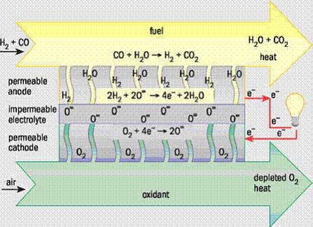
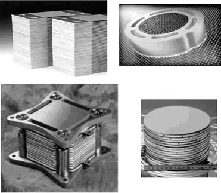
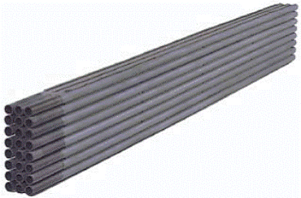
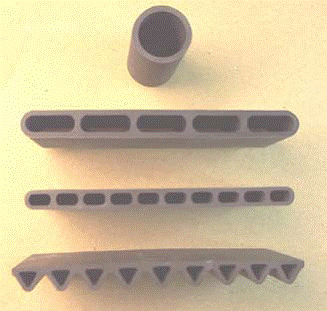
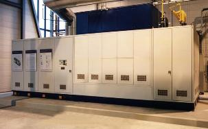

SOLID OXIDE FUEL CELLS
| Return to: Encyclopedia Home Page – Table of Contents – Author Index – Subject Index – Search – Dictionary – ESTIR Home Page – ECS Home Page |
(March, 2008)
Solid oxide fuel cells (SOFCs) offer a clean, low-pollution technology to electrochemically generate electricity at high efficiencies; since their efficiencies are not limited the way conventional heat engine's is. These fuel cells provide many advantages over traditional energy conversion systems including high efficiency, reliability, modularity, fuel adaptability, and very low levels of polluting emissions. Quiet, vibration-free operation of SOFCs also eliminates noise usually associated with conventional power generation systems.
Up until about six years ago, SOFCs were being developed for operation primarily in the temperature range of 900 to 1000oC (1692 to 1832oF); in addition to the capability of internally reforming hydrocarbon fuels (for example, natural gas), such high temperature SOFCs provide high quality exhaust heat for cogeneration, and when pressurized, can be integrated with a gas turbine to further increase the overall efficiency of the power system. However, reduction of the SOFC operating temperature by 200oC (392oF) or more allows use of a broader set of materials, is less demanding on the seals and the balance-of-plant components, simplifies thermal management, aids in faster start up and cool down, and results in less degradation of cell and stack components. Because of these advantages, activity in the development of SOFCs capable of operating in the temperature range of 650 to 800oC (1202 to 1472oF) has increased dramatically in the last few years. However, at lower temperatures, electrolyte conductivity and electrode kinetics decrease significantly; to overcome these drawbacks, alternative cell materials and designs are being extensively investigated.
An SOFC essentially consists of two porous electrodes separated by a dense, oxide ion conducting electrolyte. The operating principle of such a cell is illustrated in Figure 1. Oxygen supplied at the cathode (air electrode) reacts with incoming electrons from the external circuit to form oxide ions, which migrate to the anode (fuel electrode) through the oxide ion conducting electrolyte. At the anode, oxide ions combine with hydrogen (and/or carbon monoxide) in the fuel to form water (and/or carbon dioxide), liberating electrons. Electrons (electricity) flow from the anode through the external circuit to the cathode.
|  |
| Fig. 1. Operating principle of a solid oxide fuel cell. |
The materials for the cell components are
selected based on suitable electrical
conducting properties required of these
components to perform their intended
cell functions; adequate chemical and
structural stability at high temperatures
encountered during cell operation as
well as during cell fabrication; minimal
reactivity and interdiffusion among
different components; and matching
thermal expansion among different
components.
Materials and cell designs
Electrolyte
Yttrium-doped zirconium oxide (YSZ) remains the most widely used material for the electrolyte in SOFCs because of its sufficient ionic conductivity, chemical stability, and mechanical strength. The only drawback of stabilized YSZ is the low ionic conductivity in the lower cell operation temperature regime, below about 750oC (1382oF). Two solutions that have been tried to resolve this problem are to decrease the thickness of the YSZ electrolyte and to find other materials to replace the yttrium. Scandium-doped zirconium oxide has higher conductivity than YSZ but high cost of scandium and detrimental ageing effects in scandium doped zirconium oxide make it less attractive in commercializing SOFCs. Gadolinium- or samarium-doped cerium oxide materials possess higher oxide ion conductivity compared to zirconium based materials. However, cerium oxide based materials, under reducing conditions at high temperatures, exhibit significant electronic conductivity and dimensional change. Operation at temperatures below about 600oC (1112oF) overcomes this problem, and cerium oxide based materials are successfully being used as electrolyte in SOFCs by Ceres Power Limited (UK). In addition to the traditionally used oxides of zirconium and cerium, other mixed oxides also provide an opportunity to develop oxide ion conducting electrolytes. One mixture, containing among others gallium oxide, has attracted attention as an electrolyte. However, it has two drawbacks: uncertain cost of gallium, and uncertain chemical and mechanical stability of the oxide. In spite of these drawbacks, Mitsubishi Materials Corporation (Japan) is using this as the electrolyte in its SOFCs and has successfully built and tested up to 10-kW size SOFC power systems.Cathode
The oxidant gas is air or oxygen at the SOFC cathode, and the electrochemical reduction of oxygen requires a series of elementary reactions and involves the transfer of multiple electrons. The SOFC cathode must meet the requirements of high catalytic activity for oxygen molecule dissociation and oxygen reduction, high electronic conductivity, chemical and dimensional stability in environments encountered during cell fabrication and cell operation, thermal expansion match with other cell components, and compatibility and minimum reactivity with the electrolyte and the interconnection. Finally, the cathode must have a stable, porous microstructure so that gaseous oxygen can readily diffuse through the cathode to the cathode/electrolyte interface. These stringent electrochemical and mechanical requirements greatly restrict the number of suitable candidate materials. Lanthanum manganite, which, when substituted with low valence elements such as calcium or strontium, has good electronic conduction. Moreover, it possesses adequate electrocatalytic activity, a reasonable thermal expansion match to YSZ, and stability in the SOFC cathode operating environment.For SOFCs operating at substantially lower temperatures, such as 650 to 800oC (1202 to 1472oF), alternative cathode materials, typically containing transition metals such as cobalt, iron, and/or nickel, have been developed and optimized for better performance. In general, these materials offer higher oxide ion diffusion rates and exhibit faster oxygen reduction kinetics at the cathode/electrolyte interface compared with lanthanum manganite. However, the thermal expansion coefficient of cobaltites is much higher than that of the YSZ electrolyte, and the electrical conductivities of ferrites and nickelites are low. Nevertheless, promising results have been reported using these materials, though in many cases the improved cathodic performance is found to decrease during the cell lifetime as a result of chemical or microstructural instability. Minimization of cathodic polarization losses is one of the biggest challenges to be overcome in obtaining high, stable power densities from lower temperature SOFCs. However, these materials are very reactive toward YSZ. Therefore, a thin layer, generally of a cerium oxide based material, is used to reduce the chemical reaction between the cathode and YSZ. Microstructure also plays a major role in the cathode polarization; this is particularly true when a composite cathode, which shows a better performance compared to a single composition cathode, is used. It has been shown that polarization resistance depends upon the grain size of the ionic conductor in the composite electrode and the volume fraction of porosity.
Anode
The anode must be an excellent catalyst for the oxidation of fuel (hydrogen, carbon dioxide), stable in the reducing environment of the fuel, electronically conducting, and must have sufficient porosity to allow the transport of the fuel to and the transport of the products of fuel oxidation away from the electrolyte/anode interface where the fuel oxidation reaction takes place. The other requirements include matching of its thermal expansion coefficient with that of the electrolyte and interconnect; integrity of porosity for gas permeation; chemical stability with the electrolyte and interconnect; and applicability to use with versatile fuels and impurities. In addition, cost effectiveness is always a factor for commercialization.Nickel-YSZ composites are the most commonly used anode materials for SOFCs. Nickel is an excellent catalyst for fuel oxidation; however, it possesses a high thermal expansion coefficient, and exhibits coarsening of microstructure due to metal aggregation through grain growth at cell operation temperatures. YSZ in the anode constrains nickel aggregation and prevents sintering of the nickel particles, decreases the effective thermal expansion coefficient bringing it closer to that of the electrolyte, and provides better adhesion of the anode with the electrolyte. In these anodes, nickel has dual roles of the catalyst for hydrogen oxidation and the electrical current conductor. In addition, it is also highly active for the steam reforming of methane. This catalytic property is exploited in the so-called internal reforming SOFCs that can operate on fuels composed of mixtures of methane and water. Although nickel is an excellent hydrogen oxidation and methane-steam reforming catalyst, it also catalyzes the formation of carbon from hydrocarbons under reducing conditions. Unless sufficient amounts of steam are present along with the hydrocarbon to remove carbon from the nickel surface, the anode may be destroyed. As a result, even when using methane as the fuel, relatively high steam-to-carbon ratios are needed to suppress this deleterious reaction. Unfortunately, due to the high catalytic activity of nickel for hydrocarbon cracking, this approach does not work for higher hydrocarbons, and it is generally not possible to operate nickel-based anodes on higher hydrocarbon-containing fuels without pre-reforming with steam or oxygen. In spite of this drawback, nickel-YSZ composite remains the most commonly utilized anode material for SOFCs and is satisfactory for cells operating on clean, reformed fuel.
However, advanced SOFC designs place additional constraints on the anode, such as tolerance of oxidizing environments and/or the ability to tolerate significant quantities of sulphur and/or hydrocarbon species in the fuel stream. Alternative materials, such as cerium oxide or strontium titanate/cerium oxide mixtures, have yielded some promising results in these designs, but the benefits obtained in terms of sulphur, hydrocarbon and/or redox tolerance are counterbalanced by other limitations (such as the difficulty of integrating such materials with existing cell and stack fabrication processes and materials). Copper based anodes have also been proposed for intermediate temperature (<800oC; <1472oF) SOFCs intended to operate directly on hydrocarbon fuels without prior reformation, but the lack of catalytic activity for oxidation of fuel in copper and sintering of copper at the cell operating temperatures have limited their use in practical SOFCs.
Interconnect
Since a single cell only produces voltage less than 1 V and power around 1 W/cm2, many cells are electrically connected together in a cell stack to obtain higher voltage and power. To connect multiple cells together, an interconnection is used in SOFC stacks. The requirements of the interconnection are the most severe of all cell components and include: nearly 100 percent electronic conductivity; stability in both oxidizing and reducing atmospheres at the cell operating temperature since it is exposed to air (or oxygen) on the cathode side and fuel on the anode side; low permeability for oxygen and hydrogen to minimize direct combination of oxidant and fuel during cell operation; a thermal expansion coefficient close to that of the cathode and the electrolyte; and non-reactivity with other cell materials. To satisfy these requirements, doped lanthanum chromite is used as the interconnection for cells intended for operation at about 1000oC (1832oF).In cells intended for operation at lower temperatures (<800oC; <1412oF), it is possible to use oxidation-resistant metallic materials for the interconnection. Compared to lanthanum chromite ceramic interconnects, metallic alloys offer advantages such as improved manufacturability, significantly lower raw material and fabrication costs, and higher electrical and thermal conductivity. But to be useful for the interconnect application, the metallic alloys must satisfy additional requirements, including resistance to surface oxidation and corrosion in a dual atmosphere (simultaneous exposure to oxidizing and reducing atmospheres), thermal expansion matching to other stack components (particularly for stacks using a rigid seal design), chemical compatibility with other materials in contact with the interconnect, such as seals and cell materials, high electrical conductivity not only through the bulk material but also in in-situ-formed oxide scales, mechanical reliability and durability at the cell operating temperature, and strong adhesion between the as-formed oxide scale and the underlying alloy substrate. Ferritic stainless steels are the most promising candidates, owing to the fact that some alloys in this family offer a protective and conductive chromium-based oxide scale, appropriate thermal expansion behavior, ease of manufacturing and low cost. Several new ferritic stainless steels have been developed specifically for SOFC interconnects. Although these alloys demonstrate improved performance over traditional compositions, several critical issues remain; among these are chromium oxide scale evaporation and subsequent poisoning of cathodes; scale electrical resistivity in the long term; corrosion and spalling under interconnect exposure conditions; and compatibility with the adjacent components such as seals and electrical contact layers. To overcome some of these problems, some surface coatings can be applied onto metallic interconnects to minimize scale growth, electrical resistance and chromium volatility.
Stack design
In terms of stack design, most development has focused on planar and tubular design cells, each of these designs having a number of interesting variants; for example, the planar SOFC may be in the form of a circular disk fed with fuel from the central axis, or it may be in the form of a square plate fed from the edges. The tubular SOFC may be of a large diameter (>15 mm), or of much smaller diameter (<5 mm), the so-called microtubular cells. Also, the tubes may be flat and joined together to give higher power density and easily printable surfaces for depositing the electrode layers. Figure 2 illustrates typical planar cell stacks and a tubular cell bundle. One of the inherent advantages of tubular cell bundles is that the air and the fuel are naturally isolated because the tubes are closed at one end.|  |
|  |
| Fig. 2. Illustration of planar cell stacks (top) and a tubular cell bundle (bottom). |
However, in the case of planar
cell stacks, an effective seal must be
provided to isolate air from the fuel.
The seal must have a thermal expansion
match to the fuel cell components,
must be electrically insulating and must
be chemically stable under the
operational conditions of the stack. Also,
the seal should exhibit no deleterious
interfacial reactions with other cell
components, should be stable under
both the high temperature oxidizing
and reducing operational conditions,
should be created at a low enough
temperature to avoid damaging cell
components (under 850oC or 1562oF for some
materials), and should not migrate or
flow from the designated sealing region
during sealing or cell operation. In
addition, the sealing system should
be able to withstand thermal cycling
between the cell operation temperature
and room temperature. A number of
different sealing approaches are under
development, including rigid, bonded
seals (for example, glass-ceramics and brazes),
compliant seals (for example viscous glasses)
and compressive seals (for example, mica-based
composites); multiple sealants may also
be used in any given stack design between
different cell components. Successful
development of sealing materials and
concepts for planar SOFCs is probably
the most important issue for the long-term
performance stability and lifetime
of planar SOFC stacks and hence
for their eventual commercialization at
competitive costs.
The single biggest advantage of
tubular cells over planar cells is that they
do not require any high temperature
seals to isolate oxidant from the fuel,
and this makes performance of tubular
cell stacks very stable over long periods
of times (several years). However, their
areal power density is much lower
(about 0.2 W/cm2) compared to planar
cells (up to 2 W/cm2 for single cells
and at least 0.5 W/cm2 for stacks)
and manufacturing costs higher. The
volumetric power density is also lower
for tubular cells than for planar cells.
To increase the power density and
reduce the physical size and cost of
tubular SOFC stacks, alternate tubular
geometry cells, as illustrated in Figure 3,
are under development by Siemens.
Such alternate geometry cells combine
all the advantages of the tubular SOFCs,
such as not requiring high temperature
seals, while providing higher areal
and volumetric power densities. The
performance of these new design cells is
higher than that of cylindrical tubular
cells, but still lower than that of anode-supported planar cells.
|  |
| Fig. 3. Alternate tubular geometry cells being developed by Siemens. |
Applications
Using planar SOFCs, stationary power generation systems of from 1-kW to 25-kW size have been fabricated and tested by several organizations. Several hundred 1-kW size combined heat and power units for residential application were field tested by Sulzer Hexis; however, their cost and performance degradation was high and stack lifetime too short. With improved sealing materials and sealing concepts, planar SOFC prototype systems in the 1- to 5-kW sizes have recently been developed and are being tested by various organizations with greater success. Using tubular (cylindrical) SOFCs, Siemens/ Westinghouse fabricated a 100-kW atmospheric power generation system (Figure 4). The system was successfully operated for two years in the Netherlands on desulfurized natural gas without any detectable performance degradation. It provided up to 108 kW of ac electricity at an efficiency of 46% to the Dutch grid and approximately 85 kW of hot water for the local district heating system. At the conclusion of the operation in The Netherlands, the system was moved to a German utility site in Essen, Germany, where it operated successfully for another 4,000 hours. After replacing some cells, the system was then installed and operated in Italy, for over two years, again with very stable performance. Siemens/Westinghouse tubular cells have also been used to fabricate and field test over a dozen 5-kW size combined heat and power units, each about the size of a refrigerator. These units gave excellent performance and performance stability on a variety of hydrocarbon fuels. However, at present, their cost is high; future such units are expected to use higher power density alternate tubular geometry cells to drive down the cost.|  |
| Fig. 4. A Siemens Westinghouse 100 kilowatt SOFC power system. |
{kind=link}
Another application of SOFC systems is in the transportation sector. The polymer electrolyte membrane fuel cell is generally regarded as the fuel cell of choice for transportation applications. These fuel cells require pure hydrogen, with no carbon monoxide, as the fuel to operate successfully. However, presently no hydrogen infrastructure exists, and on-board reformer systems to produce hydrogen from existing fuel base (gasoline, diesel) are technically challenging, complex, and expensive. Furthermore, it is difficult to eliminate the carbon monoxide entirely from the reformate stream. In contrast, SOFCs can use carbon monoxide along with hydrogen as fuel, and their higher operating temperature and availability of water on the anode side makes on-cell or in-stack reformation of hydrocarbon fuels feasible. Also, no noble metal catalysts are used in SOFCs reducing cost of the cells. The initial application of SOFCs in the transportation sector will be for on-board auxiliary power units. Such auxiliary power units, operating on existing fuel base, will supply the ever increasing electrical power demands of luxury automobiles, recreational vehicles, and heavy-duty trucks. Delphi Corporation has developed a 5-kW auxiliary power unit using anode-supported planar SOFCs. This unit is intended to operate on gasoline or diesel, which is reformed through catalytic partial oxidation. The building blocks of such an auxiliary power unit consist of an SOFC stack, fuel reformation system, waste energy recovery system, thermal management system, process air supply system, control system, and power electronics and energy storage (battery) system. Delphi has reduced the mass and volume in successive generation auxiliary power units to meet the stringent automotive requirements; the remaining issues of start up time and tolerance to thermal cycling are presently being worked on.
Summary
The challenge in successfully commercializing SOFCs offering high power densities and long term durability requires reduction of costs associated with the cells and the balance-of-plant. Additionally, for transportation auxiliary power unit applications, ability for rapid start up and thermal cycling needs to be developed.Acknowledgement
This article was reproduced from the The Electrochemical Society Interface (Vol. 16, No. 4, Winter 2007) with the permission of The Electrochemical Society, Inc. (ECS) and the author.
Related articles
Batteries
Current density distribution in electrochemical
cells
Fuel cells
Micro fuel cells
PEM fuel cells
Bibliography
- Solid Oxide Fuel Cells 10 (SOFC-X) (Electrochemical Society Transactions, Vol. 7, No. 1), K. Eguchi, S. C. Singhal, H. Yokokawa, and J. Mizusaki (editors), ECS, Pennington, NJ, 2007.
Listings of electrochemistry books, review chapters, proceedings volumes, and full text of some historical publications are also available in the Electrochemistry Science and Technology Information Resource (ESTIR). (http://knowledge.electrochem.org/estir/)
Return to: Top – Encyclopedia Home Page – Table of Contents – Author Index – Subject Index – Search – Dictionary – ESTIR Home Page – ECS Home Page